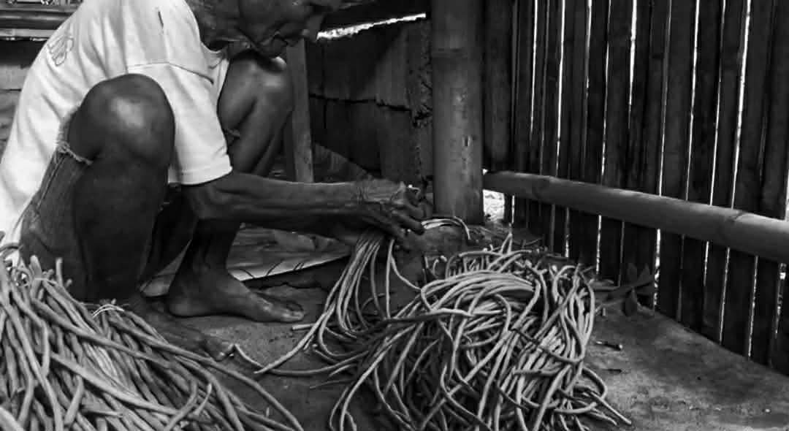
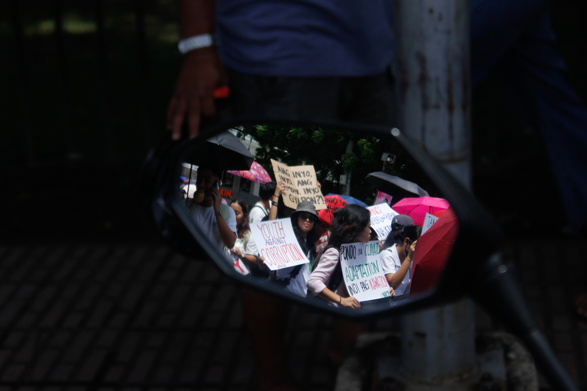

A poem on corruption · pollution · unjustified killings
We're All Unseen — Exhibit 2025
Capturing page…
Page 1 / Cover
UNSEEN
I · Opening
THERE IS NO SUCH THING AS IGNORANCE IS BLISS
FOR WHAT'S BENEATH TO THEIR SO-CALLED HIERARCHY
ARE THE PEOPLE THEY VIEW AS PESTS
We're All Unseen
Capturing page…
Page 2 / I — Opening
3

II · Pestilence
SLAVES OF THEIR ROT NAMED PESTILENCE
AS THEY'RE SWALLOWING MORE PRIDE AND POWER
WHILE THEY LET THEIR PEOPLE STARVE IN SILENCE
Corruption · Power · Hunger · Silence
We're All Unseen
Capturing page…
Page 3 / II — Pestilence
Rapid urbanization and the inadequate infrastructure and basic services in large towns and cities have led to the proliferation of SLUMS and informal settlements in the country. While POVERTY incidence of population in key metropolitan centers is on average 17% compared to the national average of 32%, slum population has been exponentially rising at an average rate of 3.4% annually. In Metro Manila, an estimated 37% of population — over 4.0 million Filipinos — live in slums in 2010 and slum population growth rate is at 8% annually. These slum dwellers and informal settlers confront on a daily basis another dimension of poverty which is environmental DEPRIVATION. The underserviced and bad living conditions in slums impact on health, livelihood and the social fiber. The effects of urban environmental problems and threats of climate change are most pronounced in slums due to their hazardous location, poor air and POLLUTION, weak disaster risk management and limited coping strategies of households. Slums are characterized by poor sanitation, overcrowded and crude habitation, inadequate water supply, hazardous location and insecurity of tenure. The people living in slums are highly vulnerable to different forms of risks — both natural and man-made. Studies show that slum poverty puts major stress on people's lives through noise, stagnant water, CONGESTION and FLOODING. Households living in these poor environs pay more for basic services, have poorer health status, lower productivity and are vulnerable to crimes and violence. Possible trade-offs exist between bad housing and medical care and between bad housing and education. Bad living environment deepens poverty, increases the vulnerability of both the poor and non-poor living in slums, and excludes the slum poor from growth. By 2050, slum population in Metro Manila alone will have reached over 9 million — people rendered INVISIBLE by the very systems built to serve them. The rising population in slums shows that inequality is rising and growth has not been inclusive. Improving slums would not only impact on POVERTY reduction but also bring about growth due to higher productivity of labor. Slum poverty cannot be addressed through traditional programs alone because bad housing significantly lowers the health status of households — especially CHILDREN. These are the UNSEEN.
HEAR
III · The Cry
"—HEAR WHAT WE AGONIZE"
We're All Unseen
Capturing page…
Page 4 / III — The Cry
5
IV · The Caldero
"FEEL WHAT WE KNEEL TO SOW OUR RICE"
AS THE UNWITNESSED CRIES OF YOUR PEOPLE
ENTRAPPED IN A RED-HOT CALDERO
"NO THERMOMETER CAN MEASURE
THE ACHE OF OUR SEARING HEARTS
SEEN THROUGH THE THERMAL-FILTERS"
We're All Unseen
Capturing page…
Page 5 / IV — The Caldero
NOISE
V · Media & Death
CORNERED BY THE MEDIA'S NOISE
AS EACH LIFE TAKEN, THEIR NAMES ARE FORGOTTEN
THE SICKNESS PREVAILS,
AS THE NOOSE TIGHTENS
We're All Unseen
Capturing page…
Page 6 / V — Media & Death
VI · The Crown
"NUMBING UNDER THE BLAME OF OUR FEVER,
YOUR CROWN SHIMMERS AFTER THEIR DEATHS
TO HIDE THEIR PERFECT RUTHLESS KINGS"
We're All Unseen
Capturing page…
Page 7 / VI — The Crown
8
VII · Haunting
UNTIL THEY WERE DETHRONED
THESE CORPSES WILL DRAG YOUR FEET
UNTIL THEIR GRAVES HAUNT YOUR SENSES
"OUR EVERYDAY SIGHS SEEPS THROUGH THEIR LIES
AS THE AIR TURNS RED"
We're All Unseen
Capturing page…
Page 8 / VII — Haunting
ASHES

VIII · Cinders
UNTIL THE TRUTH BECOME CINDERS
OF PEOPLE OPPRESSED BY THE RULERS
UNTIL THEIR ASHES RUN COLD
We're All Unseen
Capturing page…
Page 9 / VIII — Cinders
End · Fin
WE'RE ALL UNSEEN
A poem on modern issues
Corruption · Pollution · Unjustified Killings
Digital Exhibit Proposal · 2025
THERMAL VISION / HEAT OF TRUTH / THE UNSEEN PEOPLE